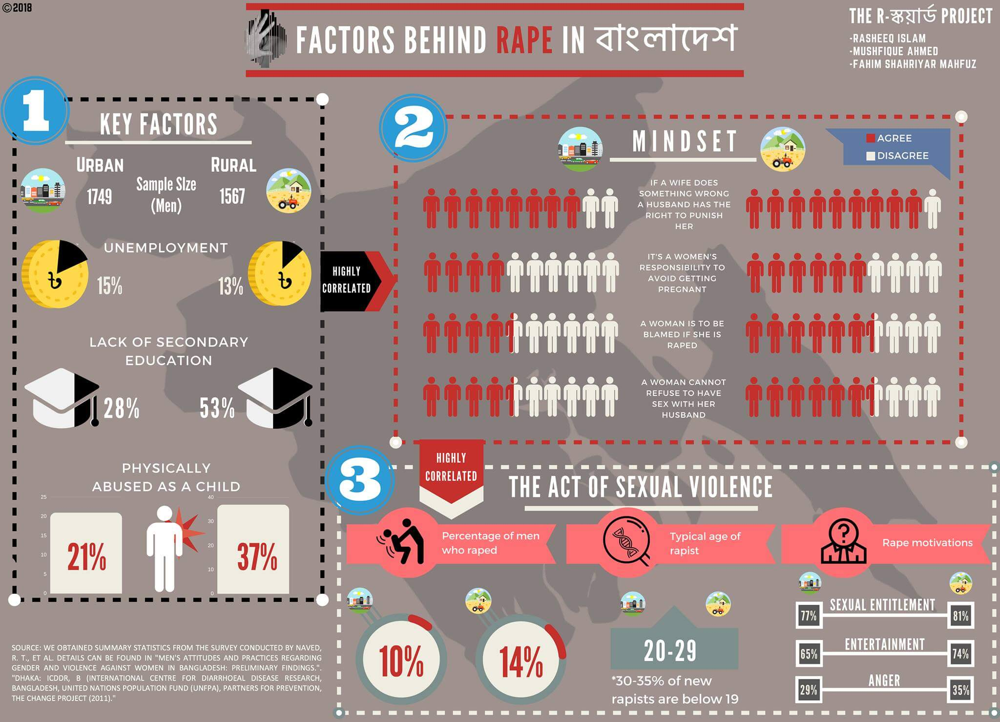

Our Projects

Why do Men Rape
Research done by Naved RT et al found that 1 in 10 men had committed sexual assault....

The Real Scenario
As we approach the next decade, an important problem that Bangladesh faces is sexual ...

Tothyo-BD
Over the last decade, data has become the new currency.Data has been at the center ...